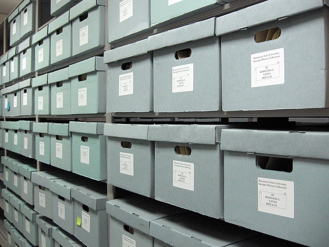
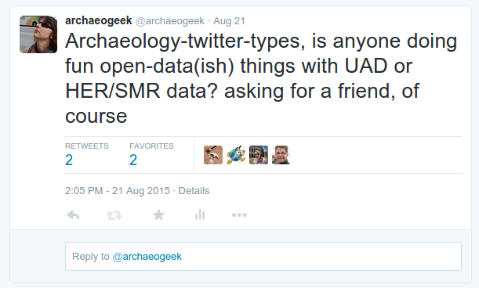
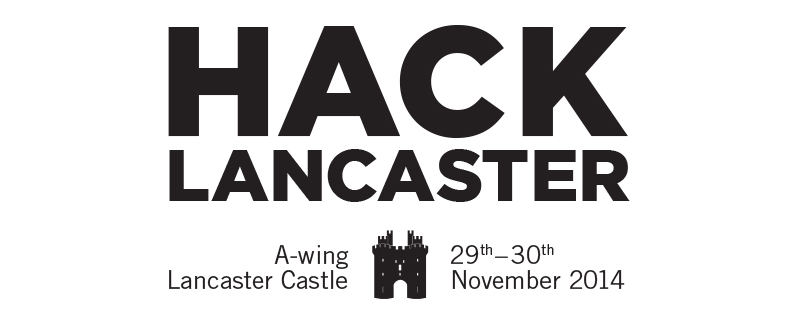

I'm an ex-archaeologist and GeoGeek,
Passionate about open source software, open data and open standards,
(and still very keen on archaeology)
I was on the team that produced the Urban Archaeological Databases for Lancaster and Carlisle for Oxford Archaeology (North)
UADs are great resources, but often locked away and never really used. The best-case scenario is absorption into the HER.

useful?
My scientific check on this:

The Result
Cue: Beyond the Castle and HackLancaster
The Brief: Open up the data in the Lancaster UAD for use in a 24hr hackathon

Question: How to achieve this with not a lot of time or money?
Primary objective: Beyond the hackathon, whatever we did had to be standards-compliant, update-able, re-usable and sustainable in the long term
The core files comprised:
a number of spatial datasets (shape files)
an access 97 database
some historic maps
several folders full of images
Job #1: Convert the spatial data and access database into PostgreSQL in a repeatable fashion
PostgreSQL was a no-brainer due to it's spatial capabilities. GitHub has a huge number of open source, OS-agnostic libraries for working with MS Access.
I used the following and combined them into some python scripts for future reuse:
This provided a php-based RESTful interface for getting at PostGIS functions such as buffers, intersects, reprojections etc
Some database manipulation was needed to change references to images, tidy up glitches etc
These processes were put into a PostgreSQL stored function so they could be repeated if the data was ever updated
Documentation was produced using GitBook
So it was online and could be updated throughout the hackathon as needed
How did it go?
Two teams of hackers used the data
The first created a map app, allowing people to follow a trail around the City "checking in" to monuments from different periods
The second created a tool visualising the distribution of finds by period and type
Observations
# 1: UAD data is complicated!
The heavily relational structure is hard to navigate
The controlled language is difficult to understand. Simple questions become complex queries
# 2: GIS knowledge is specialised
Spatial analytic capability gets ignored
Data is "fudged" to match google maps when it should be reprojected
The historic base maps and PostGIS analytical functions were ignored completely!
# 3: People may jump to tenuous conclusions
Finds classified in ten-year blocks do not imply a peak every decade!
In conclusion, non-archaeologists don't use the data in the way archaeologists expect them to
BUT at least they used the data!
“The coolest thing to do with your data will be thought of by someone else”
and...
“The set of useful things one can do with a given informational resource is always larger than can be done (or even thought of) by one individual or group”
Moving forward
We have a toolkit that could be applied to any UAD to make it available online and for wider use/analysis
All the components are open source, and don't require a huge amount of expertise
Processes can be automated and repeated so the data can be updated
It's totally flexible, so front-ends can be adapted to follow current trends.
Want to gamify your UAD and produce a Tinder for Monuments? Go ahead!
BUT...
We need a "translation-layer" to turn UAD terminologies and structures into something easier for non-specialists to understand
Deeply relational structures could be flattened into single tables
But this may bring additional complications
For updating, querying, displaying etc